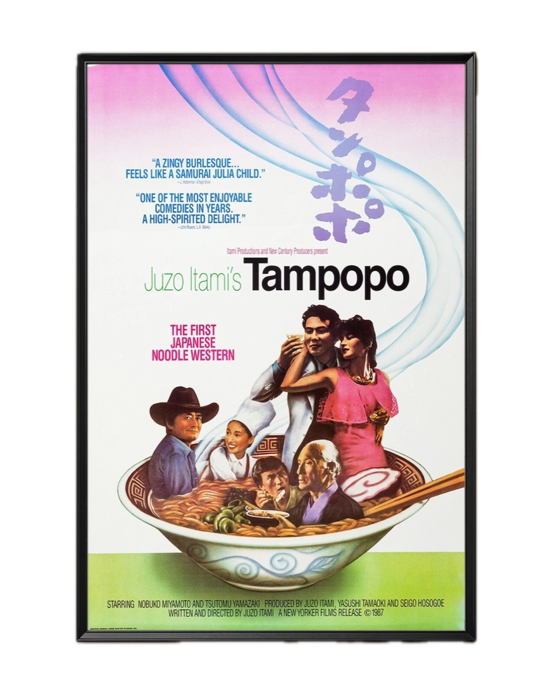
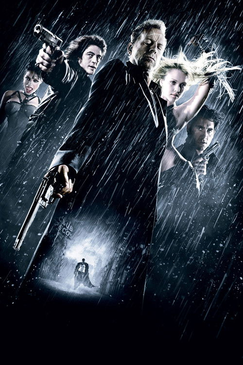
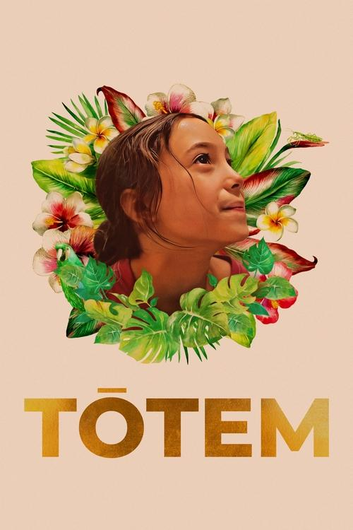
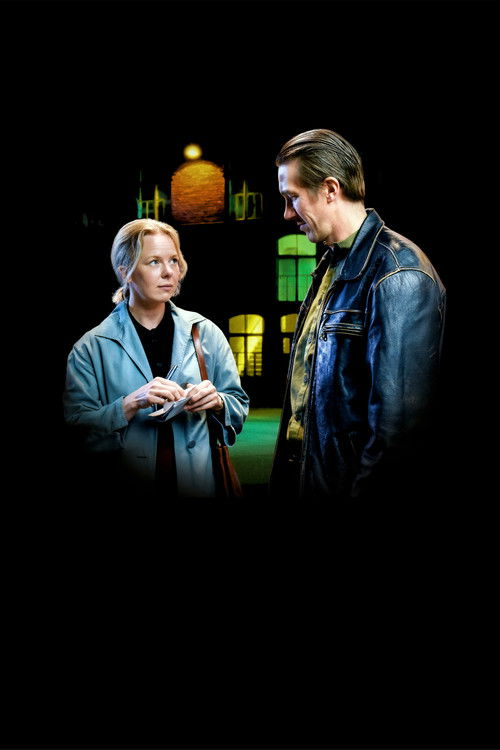
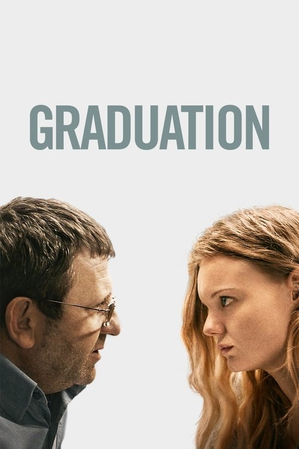
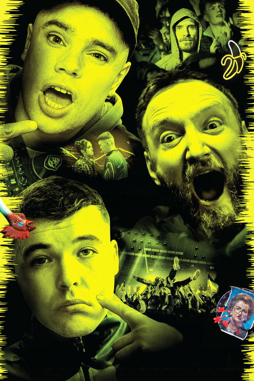

Magiske Lanterner brings carefully selected classics, contemporary discoveries and international film culture to Stavanger.

Next screening · 29 AprA "ramen western" that playfully mixes food, desire and genre conventions.
Our program
Formats
Digital + analogue35mm and 16mm projection alongside digital.
Experience
Popcorn includedWelcoming film nights with space to linger.
Location
Folken, StavangerCentral venue tied to the city's cultural scene.
Programme · Spring 2026
Eight films from January to April — cult touchstones, contemporary classics, international cinema.
January

21 JanA hyper-stylised neo-noir that turned a graphic novel into a new kind of cinema.
February

04 FebA quietly devastating family portrait seen through a child's eyes.

18 FebDeadpan Helsinki romance where two lonely workers try to find each other.
March
Animated tale of hoarding, heartbreak and finding your people.
Mads Mikkelsen destroyed by a false accusation. Nerve-shredding mob mentality.
April

08 AprA father's moral compromise spirals in this slow-burn thriller.

22 AprBelfast hip-hop trio play themselves in a wild, politically charged film about language and identity.
A “ramen western” that playfully mixes food, desire and genre conventions.
Community
Part of the Norsk Filmklubbforbund network, recognised for bold programming and a truly international film culture.
Recognition
NFK highlighted the club for its range, mixed audience and the people behind the screenings.
People
The atmosphere comes from volunteers who care about curation, hospitality and accessibility.
Network
Through NFK, screenings run with proper rights clearance while keeping club personality.
About the club
The club takes its name from the early projection device that made moving images feel uncanny, shared and alive.1
Programming
The club mixes beloved landmarks with lesser-known works and contemporary films beyond a standard cinema schedule.
Atmosphere
Free popcorn, open bar, and evenings designed to feel like a meeting point for film lovers.
Audience
NFK has highlighted the club's warm, international community. A place for newcomers and regulars alike.
Membership and tickets
Membership
Register once per season through Filmklubbmedlem.
Ticket
Paid at Folken. Card and Vipps accepted at the door.
Magiske Lanterner Stavanger Filmklubb